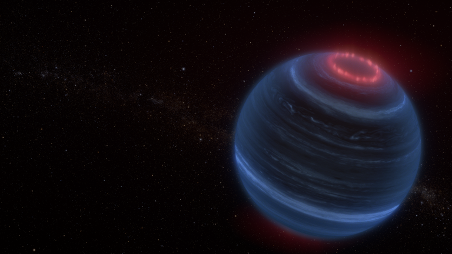
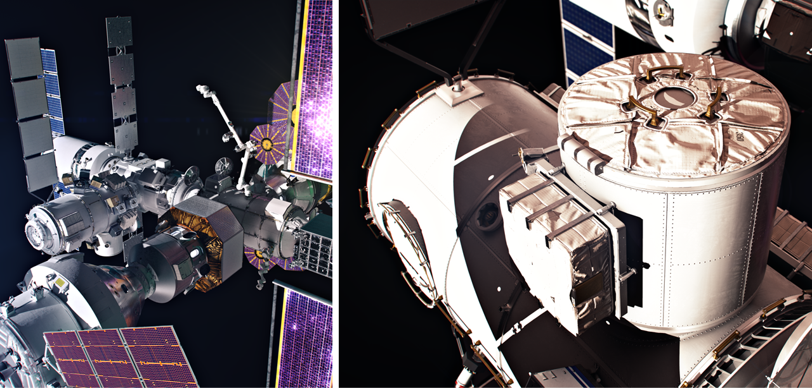
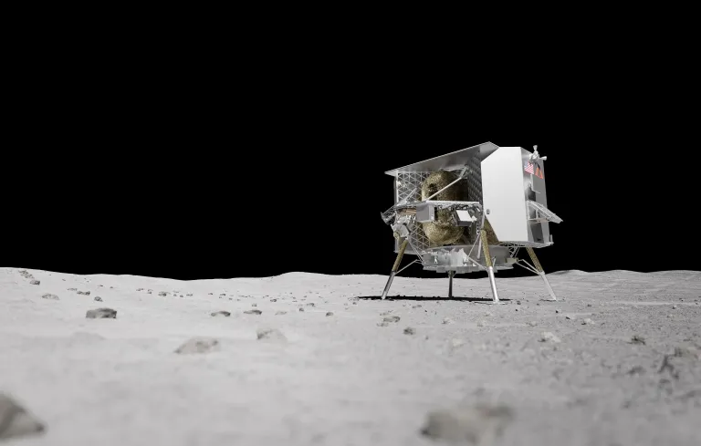
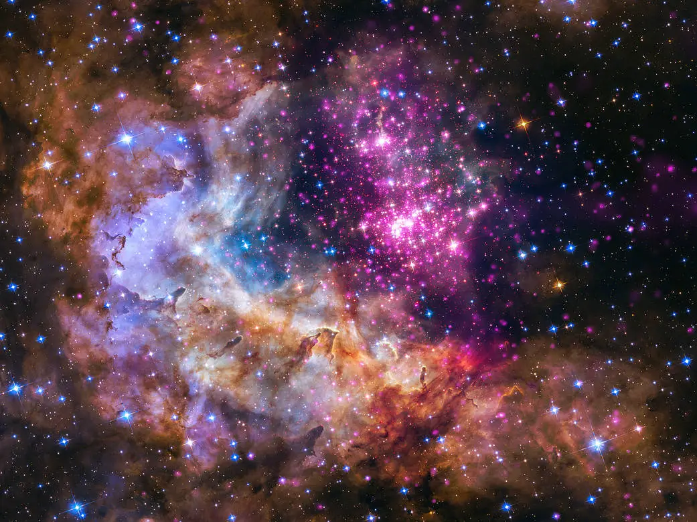
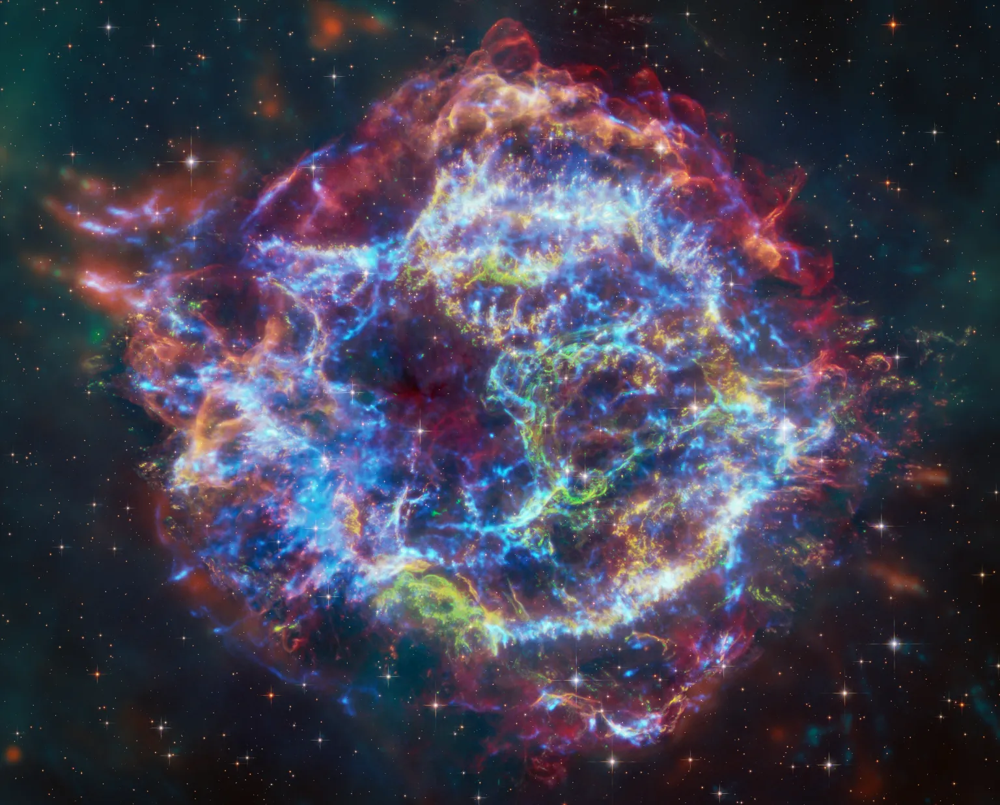

주요뉴스

NASA 웹, 고립된 갈색왜성에서 오로라 가능성 발견
NASA의 제임스 웹 우주망원경을 사용하는 천문학자들은 메탄에서 적외선을 방출하는 갈색 왜성 (목성보다 질량은 크지만 별보다 작은 물체)을 발견했는데...
NASA,아랍에미리트,Artemis Lunal Gateway Airlock 발표
달 우주 정거장은 모두의 이익을 위해 아르테미스 아래 달을 장기적으로 탐사하려는 NASA의 임무를 지원할 것입니다.


NASA, peregrine Lander를 통해 달에 5개의 페이로드를 전송
NASA는 Astrobotic의 Peregrine 착륙선인 Astrobotic Peregrine Mission One을 타고 5개의 페이로드를 달에 보내는 것으로 2024년을 시작할 예정입니다.
NASA, 미국천문학회 회의에서 새로운 발견 발표
전문가들은 미국천문학회(AAS) 제243 차 회의에서 태양계 밖의 행성부터 우주의 일시적인 고에너지 폭발에 이르기까지 다양한 주제에 관해 NASA 임무의 새로운 연구에 대해 논의할 예정입니다.

인기있는 영상
아르테미스: 달을 향해
NASA는 Artemis 임무를 통해 혁신적인
기술을 사용하여 이전보다 더 많은
달 표면을 탐험함으로써 최초의 여성이자
최초의 유색인종을 달에 착륙시킬 것입니다.
오늘의 이미지
스타의 잔해 속에 숨어있는 '녹색 괴물'
처음으로 천문학자들은 잘 알려진 초신성 잔해 카시오페이아
A(Cas A)를 연구하기 위해 NASA의 찬드라 X선 관측소와
제임스 웹 우주 망원경의 데이터를 결합했습니다.
이 작업은 펜웨이 파크 왼쪽 필드의 벽과 유사하기 때문에
"그린 몬스터"라고 불리는 파괴된 별의 잔해에 있는
특이한 구조를 설명하는 데 도움이 되었습니다.
